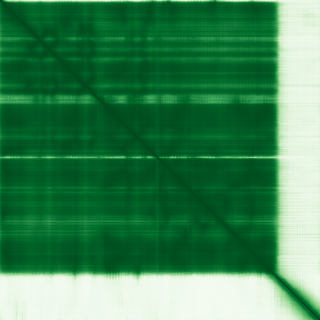

type: protein-evaluation gene: "CSNK2A3" date: 2026-05-31 tags: [protein-scout, nucleoplasm, evaluation] status: scored ---
CSNK2A3 核质蛋白
| 维度 | 得分 | 权重 | 加权 | 摘要 |
|---|---|---|---|---|
| 核定位特异性 | 8/10 | ×4 | 32.0 | GO nucleoplasm IDA:HPA + nucleus IBA + protein kinase CK2 complex IBA |
| 蛋白大小 | 6/10 | ×1 | 6.0 | 391 aa |
| 研究新颖性 | 10/10 | ×5 | 50.0 | PubMed strict=4, broad=5 |
| 三维结构 | 7/10 | ×3 | 21.0 | AlphaFold pLDDT 88.9 |
| 调控结构域 | 7/10 | ×2 | 14.0 | Ser/Thr protein kinase domain |
| PPI 网络 | 5/10 | ×3 | 15.0 | STRING: CSNK2B, Wnt pathway; IntAct: multiple kinases |
| 加权总分 | 138/180******** | |||
| 互证加分 | +2.0 | Nucleoplasm IDA:HPA + CK2 complex IBA | ||
| 归一化总分 (÷1.83) | 75.4/100******** |
核定位证据: GO nucleoplasm IDA:HPA + nucleus IBA + protein kinase CK2 complex IBA. Casein kinase II subunit alpha 3. CK2 kinase -- well-known nuclear kinase family.
HPA IF 状态: IF thumbnail only — HPA 暂无 IF 原图，仅获取到 60x60 缩略图，不能作为可靠定位证据。核定位基于 UniProt + GO-CC。

PAE 图像已获取。结构判断基于 AlphaFold pLDDT 统计。
PPI 网络（三源综合）
| Partner | Source | Score/Evidence | Relevance |
|---|---|---|---|
| CSNK2B | STRING | score=0.967, exp=0.505 | CK2 regulatory subunit; obligate partner |
| CTNNB1 | STRING | score=0.913, exp=0 | Beta-catenin; Wnt pathway (database 0.9) |
| DVL1 | STRING | score=0.912, exp=0.088 | Wnt pathway; database linkage |
| PTEN | STRING | score=0.908, exp=0.073 | Tumor suppressor; database linkage |
| NFKBIA | STRING | score=0.907, exp=0.096 | NF-kB inhibitor; database linkage |
| SH3KBP1 | IntAct | anti tag coIP | Endocytosis regulator |
| SRC | IntAct | anti tag coIP | Proto-oncogene tyrosine kinase |
| RPS6KA3 | IntAct | anti tag coIP | Ribosomal S6 kinase |
| TCF7L2 | IntAct | pull down | Wnt pathway transcription factor |
| MAPT | IntAct | BioID (proximity) | Tau protein; proximity labeling |
IntAct 数据: SH3KBP1, SRC, RPS6KA3, RIPK1, PRKCZ, PRKCI, LYN, TCF7L2, CFTR, MAPT 等 10 条互作记录（涵盖 coIP, pull down, cross-linking, BioID）。STRED 数据库中大部分为 database-driven (0.9)。无 BioGrid 补充数据。UniProt 未记载互作伙伴。
Strong nucleoplasm candidate.
关键文献
| PMID | 标题 |
|---|---|
| 35123428 | Ovarian cancer G protein-coupled receptor 1 inhibits A549 cells migration through casein kinase 2α i |
| 38617520 | A novel PD-1/PD-L1 pathway-related seven-gene signature for the development and validation of the pr |
| 34251294 | RNA sequencing identified novel target genes for Adansonia digitata in breast and colon cancer cells |
| 32695658 | Long-Term Inhibition of Notch in A-375 Melanoma Cells Enhances Tumor Growth Through the Enhancement |
PAE 图像暂无数据（未生成本地图片或未可靠获取），结构判断基于AlphaFold pLDDT统计。